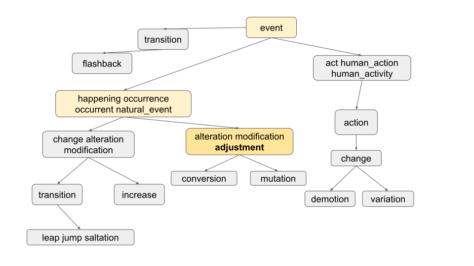
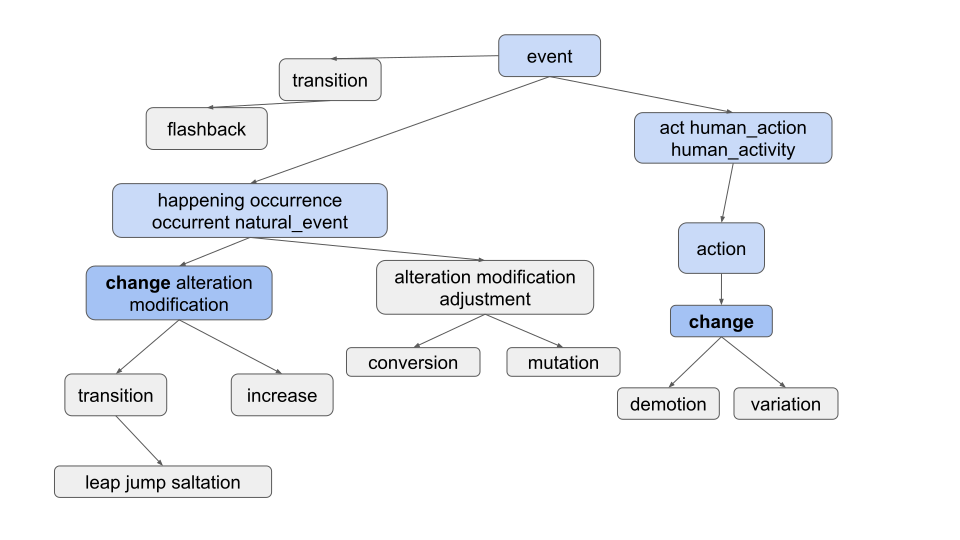
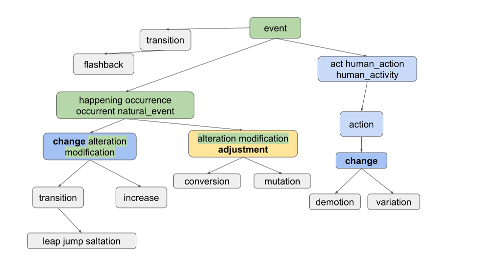
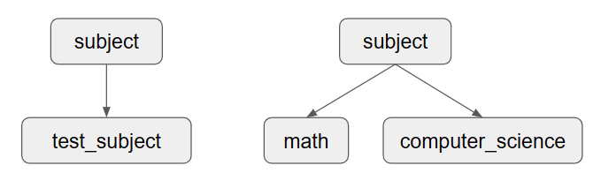

Project 2C: Ngordnet Enhancements
FAQ
Each assignment will have an FAQ linked at the top. You can also access it by adding “/faq” to the end of the URL. The FAQ for Project 2C is located here.
Checkpoint & Design Doc Due 03/15/2024
Coding Due 04/01/2024
In this project, you’ll complete your implementation of the NGordnet for k!=0 and commonAncestors case.
As this is a quite new project, there may be occasional bugs or confusion with the spec. If you notice anything of this sort, please post on Ed.
Please read through the 2B spec before starting 2C.
Project Setup
THE SETUP FOR THIS PROJECT IS DIFFERENT THAN THE OTHER LABS / PROJECTS. PLEASE DO NOT SKIP THIS STEP!
Skeleton Setup
- Similar to other assignments in this class, run
git pull skeleton mainto get the skeleton code for this project.- NOTE: You’ll notice that this skeleton is (almost) the exact same as the Project 2B skeleton. This is intentional.
- Download the
datafiles for this project using this link and move them into yourproj2cfolder on the same level assrc. - Copy your implementation from 2A for
ngrams, includingTimeSeriesandNGramMap, into theproj2cfolder. - Copy your implementation from 2B into the
proj2cfolder, sincek!=0&commonAncestorswill depend on your implementation from 2A and 2B.
Once you are done, your proj2c directory should look like this:
proj2c
├── data
│ ├── ngrams
│ └── wordnet
├── src
│ ├── <2B helper files>
│ ├── browser
│ ├── main
│ ├── ngrams
│ │ ├── <Your NGramMap implementation from 2A>
│ │ └── <Your TimeSeries implementation from 2A>
│ └── plotting
├── static
└── tests
While you can (and should!) certainly design for 2C in advance, we suggest only starting to code after you get a full score on Project 2B just in case your implementation has any subtle bugs in it.
Getting Started
IMPORTANT NOTE: You should really complete Project 2B/C: Checkpoint first before starting coding, or even designing your project. It will be helpful for your understanding of the project. We will also require you to submit a design document to Gradescope. More details about the design document can be found in Deliverables and Scoring.
This part of the project is designed for you to come up with an efficient and correct design for your implementation. The design you come up with will be very important to handle these cases. Please read the 2B & 2C spec carefully before starting your design document.
We’ve created two wonderful tools that you can (and should!) use to explore the dataset, see how the staff solution behaves for specific inputs, and get expected outputs for your unit tests (see Testing Your Code). We’ll link them here, as well as in other relevant parts of the spec.
- Wordnet Visualizer: Useful for visually understanding how synsets and hyponyms work and testing different words/lists of words for potential test case inputs. Click on the “?” bubbles to learn how to use the various features of this tool!
- Staff Solution Webpage: Useful for generating expected outputs for different test case inputs. Use this to write your unit tests!
Read through the entire 2B/C spec and complete Project 2B/C: Checkpoint
After finishing the checkpoint, complete Design Document
Handling k != 0
In Project 2B, we handled the situation where k == 0, which is the default value when the user does not enter a k value.
Your required task is to handle the case where the user enters k. k represents the maximum number of hyponyms
that we want in our output. For example, if someone enters the word “dog”, and then enters k = 5, your code would
return at most 5 words.
To choose the 5 hyponyms, you should return the k words which occurred the most times in the time range requested. For
example, if someone entered words = ["food", "cake"], startYear = 1950, endYear = 1990, and k = 5, then you would
find the 5 most popular words in that time period that are hyponyms of both food and cake. Here, the popularity is
defined as the total number of times the word appears over the entire time period requested. The words should then be returned in
alphabetical order. In this case, the answer is [cake, cookie, kiss, snap, wafer] if we’re
using top_14377_words.csv, total_counts.csv,
synsets.txt, and hyponyms.txt.
Be sure you are getting the words that appear with the highest counts, not the highest weights. Otherwise, you will run into issues that are very difficult to debug!
Note that if the frontend doesn’t supply a year, default values of startYear = 1900 and endYear = 2020 are provided by
NGordnetQueryHandler.readQueryMap.
It might be hard to figure out the hyponyms of the words with k != 0 so we are providing data that is easier to visualize! Below, you’ll see a modified version for EECS class requirements, inspired by HKN. We have also provided the data that represents the graph below (frequency-EECS.csv, hyponyms-EECS.txt, synsets-EECS.txt). If someone entered words = ["CS61A"], startYear = 2010, endYear = 2020, and k = 4, you should receive "[CS170, CS61A, CS61B, CS61C]". This frequency-EECS.csv is a bit different from the previous one since it has values with the same frequencies. We highly recommend you to take a look at frequency-EECS.csv. Also, while you are designing your implementation, bear this in mind that we can give you words with the same frequencies.
If a word never occurs in the time frame specified, i.e. the count is zero, it should not be returned. In other words,
if k > 0, we should not show any words that do not appear in the ngrams dataset.
If there are no words that have non-zero counts, you should return an empty list, i.e. [].
If there are fewer than k words with non-zero counts, return only those words. For example if you enter the word
"potato" and enter k = 15, but only 7 hyponyms of "potato" have non-zero counts, you’d return only 7 words.
This task will be a little trickier since you’ll need to figure out how to pass information around so that the HyponymsHandler knows how to access a useful NGramMap.
Modify your
HyponymsHandlerand the rest of your implementation to deal with thek != 0case.
EECS-course guide is not available on the interactive web staff solution so it won’t return anything if you give the input CS61A.
DO NOT MAKE A STATIC NGRAMMAP FOR THIS TASK! It might be tempting to simply make some sort of
public static NGramMapthat can be accessed from anywhere in your code. This is called a "global variable".We strongly discourage this way of thinking about programming, and instead suggest that you should be passing an NGramMap to either constructors or methods. We’ll come back to talking about this during the software engineering lectures.
Tips
- Until you use the autograder, you’ll need to construct your own test cases. We provided one
in the previous section:
words = ["food", "cake"],startYear = 1950,endYear = 1990,k = 5. - When constructing your own test cases, consider making your own input files. Using the large input files we provide is extremely tedious.
Finding Common Ancestors
Up until now, we have only been concerned with finding the common hyponyms of words. For the last part of this project, your task is to find the common ancestors.
That is, given a set of words, what words contain the given set of words as hyponyms?
For example, consider synsets16.txt and hyponyms16.txt from 2B:

If we find the ancestors of "adjustment", we should get "[adjustment, alteration, event, happening, modification, natural_event, occurrence, occurrent]", as shown in the graph below.

This also should apply to words in multiple contexts, as seen with "change":

The ancestors of "change" should be "[act, action, alteration, change, event, happening, human_action, human_activity, modification, natural_event, occurrence, occurrent]".
We can also ask for the common ancestors of sets of words, which can reveal some neat relationships!

Here, we find the common ancestors of the words = ["change", "adjustment"]. The result should be "[alteration, event, happening, modification, natural_event, occurrence, occurrent]", which are all the words in the graph that contain both "change" and "adjustment" as hyponyms. Note that "alteration" and "modification" are also included in the result, contrary to what you might expect, as explained below.
Note: Be sure to take a word intersection rather than a node intersection just as in 2B, so the common ancestors of ["test_subject", "math"] in the following graph should return "[subject]", as "subject" contains both "test_subject" and "math" as hyponyms, even though "test_subject" and "math" are not directly connected in the graph.

We may also ask for common ancestors of three or more words.
Note that the outputs are in alphabetical order, and keep in mind that k != 0 can also apply to this task.
Your query handling needs to remain efficient for common ancestors (i.e., the timeouts applied to 2B still apply here). This means that going through every single word and checking if it contains all the words in the query as hyponyms will be too slow on the larger datasets!
NgordnetQueryType
You will need to modify your HyponymsHandler class to account for the type of query, i.e., hyponyms or common ancestors. This should look similar to how you found startYear, endYear, or k, and this will be specified for you with NgordnetQueryType.HYPONYMS or NgordnetQueryType.ANCESTORS, respectively.
Modify your
HyponymsHandlerand the rest of your implementation to handle common ancestor queries in addition to hyponym queries.
Design Tips
As mentioned before, you should not need to copy-paste your code or do anything too drastic to handle this task. Consider how you can use the same data structures and methods from before to solve this problem, perhaps with a few tweaks.
Helper methods are your friends! If you find yourself writing similar code more than once, consider making a helper method that you can call from both places that does the common work for you.
Deliverables and Scoring
For Project 2C, the only required deliverable is the HyponymsHandler.java file, in addition to any helper classes.
However, we will not be directly grading these classes, since they can vary from student to student.
- Project 2B/C: Checkpoint: 5 points - Due March 15th
- Project 2C Coding: 25 points - Due April 1st
HyponymsHandlerpopularity-hardcoded: 20%, k != 0HyponymsHandlerpopularity-randomized: 30%, k != 0HyponymsHandlercommon-ancestors: 50%
In addition to Project 2C, you will also have to turn in your design document. This will be worth 5 points and it is due March 15th. The design document’s main purpose is to serve as a foundation for your project. It is important to think and ideate before coding. What we are looking for in the design document:
- Identify the data structures we have learned in the class that you will be using in your implementation.
- Pseudocode / general overview of your algorithm for your implementation.
Your design document should be around 1 - 2 pages long. Design document will be mainly graded on effort, thought and completion.
Please make a copy of this template and submit to Gradescope.
Don’t worry if you decide to change your design document after. You are free to do so! We want you to think about the implementation before coding therefore we require you to submit your design as the part of the project.
The token limiting policy for this project will be as follows: You will start with 8 tokens, each of which has a 24-hour refresh time.
Testing Your Code
We’ve provided you with two short unit test files for this project in the proj2c/tests directory:
TestOneWordKNot0Hyponyms.javaTestCommonAncestors.java
These test files are not comprehensive; in fact, they each only contain one sanity check test. You should fill each file with more unit tests, and also use them as a template to create two new test files for the respective cases.
If you need help figuring out what the expected outputs of your tests should be, you should use the two tools that we linked in the Getting Started section.
Debugging Tips
- Use the small files while testing! This decreases the startup time to run
Main.javaand makes it easier to reason about the code. If you’re runningMain.java, these files are set in the first few lines of themainmethod. For unit tests, the file names are passed into thegetHyponymsHandlermethod. - You can run
Main.javawith the debugger to debug different inputs quickly. After clicking the “Hyponyms” button, your code will execute with the debugger - breakpoints will be triggered, you can use the variables window, etc. - There are a lot of moving parts to this project. Don’t start by debugging line-by-line. Instead, narrow down which function/region of your code is not working correctly then search more closely in those lines.
- Check the FAQ for common issues and questions.
Submitting Your Code
Throughout this assignment, we’ve had you use your front end to test your code. Our grader is not sophisticated enough
to pretend to be a web browser and call your code. Instead, we’ll need you to provide a method in the
proj2c_testing.AutograderBuddy class that provides a handler that can deal with hyponyms requests.
When you ran git pull skeleton main at the start of this spec, you should have received a file called AutograderBuddy.java
Just like 2B, open AutograderBuddy.java and fill in the getHyponymsHandler method such that it returns a HyponymsHandler
that uses the four given files. Your code here will probably be similar to your code in Main.java.
Now that you’ve created proj2c.testing.AutograderBuddy, you can submit to the
autograder. If you fail any tests, you should be able to replicate them locally as JUnit tests by building on the test
files above. If any additional datafiles are needed, they will be added to this section as links.
Optional Extra Features
If you’d like to go above and beyond in this project (and even explore some front-end development), read through the Optional Features spec!
Acknowledgements
The WordNet part of this assignment is loosely adapted from Alina Ene and Kevin Wayne’s Wordnet assignment at Princeton University.